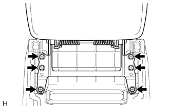
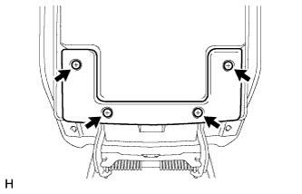
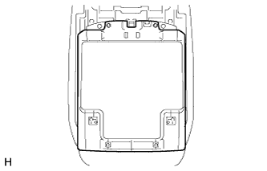
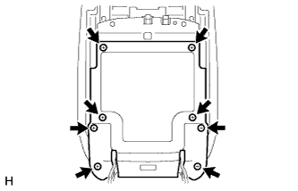
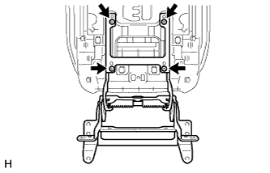
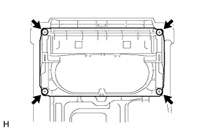
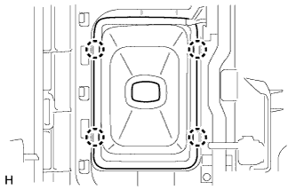
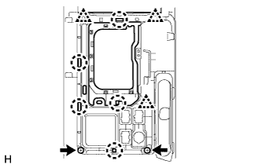
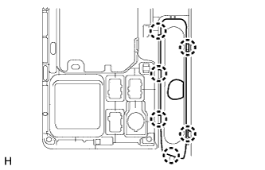

ПЕРЕДНИЙ ВЕЩЕВОЙ ЯЩИК В ОБЛИЦОВКЕ ТУННЕЛЯ ПОЛА (для моделей с автоматической трансмиссией) > РАЗБОРКА |
| 1. СНИМИТЕ ДВЕРЦУ ВЕЩЕВОГО ЯЩИКА В ОБЛИЦОВКЕ ТУННЕЛЯ ПОЛА В СБОРЕ |
|  |
Выверните 6 винтов и снимите дверцу вещевого ящика в облицовке туннеля пола.
| 2. СНИМИТЕ ПЕТЛЮ ДВЕРЦЫ ВЕЩЕВОГО В ОБЛИЦОВКЕ ТУННЕЛЯ ПОЛА В СБОРЕ |
|  |
Выверните 4 винта.
|  |
Снимите крышку.
|  |
Выверните 8 винтов и снимите крышку.
|  |
Выверните 4 винта и снимите петлю дверцы вещевого ящика в облицовке туннеля пола.
| 3. СНИМИТЕ ДЕФЛЕКТОР НА ВЕЩЕВОМ ЯЩИКЕ В ОБЛИЦОВКЕ ТУННЕЛЯ ПОЛА В СБОРЕ |
 |
Отсоедините 4 захвата и снимите воздуховод с дефлектором вещевого ящика в облицовке туннеля пола.
| 4. СНИМИТЕ ПОДСТАВКУ ДЛЯ ЧАШКИ С ПАНЕЛИ ПРИБОРОВ |
|  |
Выверните 4 винта и снимите подставку для чашки с панели приборов.
| 5. СНИМИТЕ ЧЕХОЛ ЛЮЧКА РЫЧАГА ПЕРЕКЛЮЧАТЕЛЯ ПЕРЕДАЧ В СБОРЕ |
|  |
Освободите 4 захвата и снимите чехол лючка рычага переключения передач.
| 6. СНИМИТЕ ВЕЩЕВОЙ ЯЩИК В ОБЛИЦОВКЕ ТУННЕЛЯ ПОЛА В СБОРЕ |
 |
Выверните винт.
Отсоедините 7 захватов и 5 направляющих.
Освободите зажим и снимите вещевой ящик в облицовке туннеля пола.
| *1 | Направляющая |
| *2 | Хомут |
| 7. СНИМИТЕ ВЕРХНЮЮ ПАНЕЛЬ КОНСОЛИ |
|  |
Выверните 2 винта.
Освободите 5 захватов и 3 фиксатора и снимите верхнюю облицовку панели пола.
| 8. СНИМИТЕ КРЫШКУ ОТВЕРСТИЯ СТОЯНОЧНОГО ТОРМОЗА В СБОРЕ |
|  |
Освободите 6 захватов и снимите крышку отверстия стояночного тормоза.